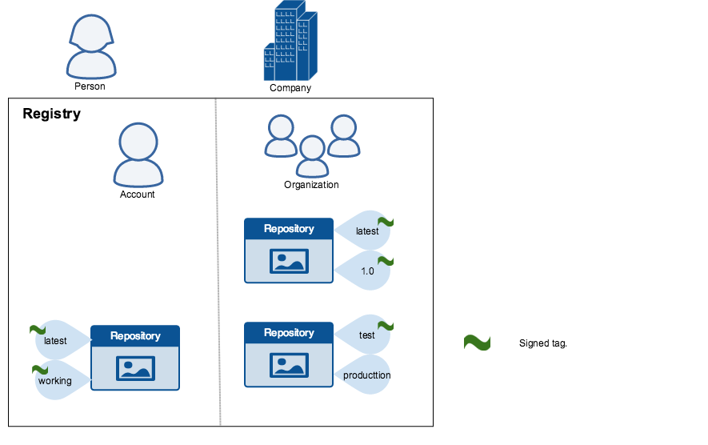
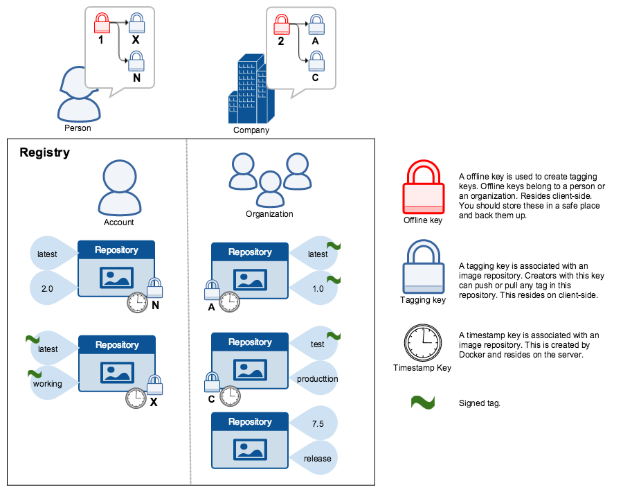

Content trust in Docker
Estimated reading time: 13 minutesWhen transferring data among networked systems, trust is a central concern. In particular, when communicating over an untrusted medium such as the internet, it is critical to ensure the integrity and the publisher of all the data a system operates on. You use the Docker Engine to push and pull images (data) to a public or private registry. Content trust gives you the ability to verify both the integrity and the publisher of all the data received from a registry over any channel.
About Docker Content Trust (DCT)
Docker Content Trust (DCT) provides the ability to use digital signatures for data sent to and received from remote Docker registries. These signatures allow client-side or runtime verification of the integrity and publisher of specific image tags.
Through DCT, image publishers can sign their images and image consumers can ensure that the images they use are signed. Publishers could be individuals or organizations manually signing their content or automated software supply chains signing content as part of their release process.
Image tags and DCT
An individual image record has the following identifier:
[REGISTRY_HOST[:REGISTRY_PORT]/]REPOSITORY[:TAG]
A particular image REPOSITORY can have multiple tags. For example, latest and
3.1.2 are both tags on the mongo image. An image publisher can build an image
and tag combination many times changing the image with each build.
DCT is associated with the TAG portion of an image. Each image repository has
a set of keys that image publishers use to sign an image tag. Image publishers
have discretion on which tags they sign.
An image repository can contain an image with one tag that is signed and another
tag that is not. For example, consider the Mongo image
repository. The latest
tag could be unsigned while the 3.1.6 tag could be signed. It is the
responsibility of the image publisher to decide if an image tag is signed or
not. In this representation, some image tags are signed, others are not:

Publishers can choose to sign a specific tag or not. As a result, the content of
an unsigned tag and that of a signed tag with the same name may not match. For
example, a publisher can push a tagged image someimage:latest and sign it.
Later, the same publisher can push an unsigned someimage:latest image. This second
push replaces the last unsigned tag latest but does not affect the signed latest version.
The ability to choose which tags they can sign, allows publishers to iterate over
the unsigned version of an image before officially signing it.
Image consumers can enable DCT to ensure that images they use were signed. If a consumer enables DCT, they can only pull, run, or build with trusted images. Enabling DCT is a bit like applying a “filter” to your registry. Consumers “see” only signed image tags and the less desirable, unsigned image tags are “invisible” to them.

To the consumer who has not enabled DCT, nothing about how they work with Docker images changes. Every image is visible regardless of whether it is signed or not.
Docker Content Trust Keys
Trust for an image tag is managed through the use of signing keys. A key set is created when an operation using DCT is first invoked. A key set consists of the following classes of keys:
- an offline key that is the root of DCT for an image tag
- repository or tagging keys that sign tags
- server-managed keys such as the timestamp key, which provides freshness security guarantees for your repository
The following image depicts the various signing keys and their relationships:

WARNING: Loss of the root key is very difficult to recover from. Correcting this loss requires intervention from Docker Support to reset the repository state. This loss also requires manual intervention from every consumer that used a signed tag from this repository prior to the loss.
You should back up the root key somewhere safe. Given that it is only required to create new repositories, it is a good idea to store it offline in hardware. For details on securing, and backing up your keys, make sure you read how to manage keys for DCT.
Signing Images with Docker Content Trust
Note this applies to Docker Community Engine 17.12 and newer, and Docker Enterprise Engine 18.03 and newer.
Within the Docker CLI we can sign and push a container image with the
$ docker trust command syntax. This is built on top of the Notary feature
set, more information on Notary can be found here.
A prerequisite for signing an image is a Docker Registry with a Notary server attached (Such as the Docker Hub or Docker Trusted Registry). Instructions for standing up a self-hosted environment can be found here.
To sign a Docker Image you will need a delegation key pair. These keys
can be generated locally using $ docker trust key generate, generated
by a certificate authority, or if you are using Docker Enterprise’s
Universal Control Plane (UCP), a user’s Client Bundle provides adequate keys for a
delegation. Find more information on Delegation Keys
here.
First we will add the delegation private key to the local Docker trust
repository. (By default this is stored in ~/.docker/trust/). If you are
generating delegation keys with $ docker trust key generate, the private key
is automatically added to the local trust store. If you are importing a separate
key, such as one from a UCP Client Bundle you will need to use the
$ docker trust key load command.
$ docker trust key generate jeff
Generating key for jeff...
Enter passphrase for new jeff key with ID 9deed25:
Repeat passphrase for new jeff key with ID 9deed25:
Successfully generated and loaded private key. Corresponding public key available: /home/ubuntu/Documents/mytrustdir/jeff.pub
Or if you have an existing key:
$ docker trust key load key.pem --name jeff
Loading key from "key.pem"...
Enter passphrase for new jeff key with ID 8ae710e:
Repeat passphrase for new jeff key with ID 8ae710e:
Successfully imported key from key.pem
Next we will need to add the delegation public key to the Notary server; this is specific to a particular image repository in Notary known as a Global Unique Name (GUN). If this is the first time you are adding a delegation to that repository, this command will also initiate the repository, using a local Notary canonical root key. To understand more about initiating a repository, and the role of delegations, head to delegations for content trust.
$ docker trust signer add --key cert.pem jeff dtr.example.com/admin/demo
Adding signer "jeff" to dtr.example.com/admin/demo...
Enter passphrase for new repository key with ID 10b5e94:
Finally, we will use the delegation private key to sign a particular tag and push it up to the registry.
$ docker trust sign dtr.example.com/admin/demo:1
Signing and pushing trust data for local image dtr.example.com/admin/demo:1, may overwrite remote trust data
The push refers to repository [dtr.example.com/admin/demo]
7bff100f35cb: Pushed
1: digest: sha256:3d2e482b82608d153a374df3357c0291589a61cc194ec4a9ca2381073a17f58e size: 528
Signing and pushing trust metadata
Enter passphrase for signer key with ID 8ae710e:
Successfully signed dtr.example.com/admin/demo:1
Alternatively, once the keys have been imported an image can be pushed with the
$ docker push command, by exporting the DCT environmental variable.
$ export DOCKER_CONTENT_TRUST=1
$ docker push dtr.example.com/admin/demo:1
The push refers to repository [dtr.example.com/admin/demo:1]
7bff100f35cb: Pushed
1: digest: sha256:3d2e482b82608d153a374df3357c0291589a61cc194ec4a9ca2381073a17f58e size: 528
Signing and pushing trust metadata
Enter passphrase for signer key with ID 8ae710e:
Successfully signed dtr.example.com/admin/demo:1
Remote trust data for a tag or a repository can be viewed by the
$ docker trust inspect command:
$ docker trust inspect --pretty dtr.example.com/admin/demo:1
Signatures for dtr.example.com/admin/demo:1
SIGNED TAG DIGEST SIGNERS
1 3d2e482b82608d153a374df3357c0291589a61cc194ec4a9ca2381073a17f58e jeff
List of signers and their keys for dtr.example.com/admin/demo:1
SIGNER KEYS
jeff 8ae710e3ba82
Administrative keys for dtr.example.com/admin/demo:1
Repository Key: 10b5e94c916a0977471cc08fa56c1a5679819b2005ba6a257aa78ce76d3a1e27
Root Key: 84ca6e4416416d78c4597e754f38517bea95ab427e5f95871f90d460573071fc
Remote Trust data for a tag can be removed by the $ docker trust revoke command:
$ docker trust revoke dtr.example.com/admin/demo:1
Enter passphrase for signer key with ID 8ae710e:
Successfully deleted signature for dtr.example.com/admin/demo:1
Runtime Enforcement with Docker Content Trust
Note this only applies to Docker Enterprise Engine 18.09 or newer. This implementation is also separate from the
only run signed imagesfeature of Universal Control Plane
Docker Content Trust within the Docker Enterprise Engine prevents a user from using a container image from an unknown source, it will also prevent a user from building a container image from a base layer from an unknown source. Trusted sources could include Official Docker Images, found on the Docker Hub, or User trusted sources, with repositories and tags signed with the commands above.
Engine Signature Verification prevents the following:
$ docker container runof an unsigned image.$ docker pullof an unsigned image.$ docker buildwhere theFROMimage is not signed or is not scratch.
DCT does not verify that a running container’s filesystem has not been altered from what was in the image. For example, it does not prevent a container from writing to the filesystem, once the container is running, nor does it prevent the container’s filesystem from being altered on disk. DCT will also not prevent unsigned images from being imported, loaded, or created.
Enabling DCT within the Docker Enterprise Engine
DCT is controlled by the Docker Engine’s configuration file. By default this is
found at /etc/docker/daemon.json. More details on this file can be found
here.
The content-trust flag is based around a mode variable instructing
the engine whether to enforce signed images, and a trust-pinning variable
instructing the engine which sources to trust.
Mode can take three variables:
Disabled- Verification is not active and the remainder of the content-trust related metadata will be ignored. This is the default value ifmodeis not specified.Permissive- Verification will be performed, but only failures will be logged and remain unenforced. This configuration is intended for testing of changes related to content-trust. The results of the signature verification is displayed in the Docker Engine’s daemon logs.Enforced- Content trust will be enforced and an image that cannot be verified successfully will not be pulled or run.
{
"content-trust": {
"mode": "enforced"
}
}
Official Docker images
All official Docker library images found on the Docker Hub (docker.io/library/*) are signed by the same Notary root key. This root key’s ID has been embedded inside of the Docker Enterprise Engine. Therefore, to enforce that, only official Docker images can be used. Specify:
{
"content-trust": {
"trust-pinning": {
"official-library-images": true
},
"mode": "enforced"
}
}
User-Signed images
There are two options for trust pinning user-signed images:
- Notary Canonical Root Key ID (DCT Root Key) is an ID that describes just the
root key used to sign a repository (or rather its respective keys). This is the
root key on the host that originally signed the repository (i.e. your workstation).
This can be retrieved from the workstation that signed the repository through
$ grep -r "root" ~/.docker/trust/private/(Assuming your trust data is at~/.docker/trust/*). It is expected that this canonical ID has initiated multiple image repositories (mydtr/user1/image1andmydtr/user1/image2).
# Retrieving Root ID
$ grep -r "root" ~/.docker/trust/private
/home/ubuntu/.docker/trust/private/0b6101527b2ac766702e4b40aa2391805b70e5031c04714c748f914e89014403.key:role: root
# Using a Canonical ID that has signed 2 repos (mydtr/user1/repo1 and mydtr/user1/repo2). Note you can use a Wildcard.
{
"content-trust": {
"trust-pinning": {
"root-keys": {
"mydtr/user1/*": [
"0b6101527b2ac766702e4b40aa2391805b70e5031c04714c748f914e89014403"
]
}
},
"mode": "enforced"
}
}
- Notary Root key ID (DCT Certificate ID) is an ID that describes the same, but
the ID is unique per repository. For example,
mydtr/user1/image1andmydtr/usr1/image2will have unique certificate IDs. A certificate ID can be retrieved through a$ docker trust inspectcommand and is labelled as a root-key (referring back to the Notary key name). This is designed for when different users are signing their own repositories, for example, when there is no central signing server. As a cert-id is more granular, it would take priority if a conflict occurs over a root ID.
# Retrieving Cert ID
$ docker trust inspect mydtr/user1/repo1 | jq -r '.[].AdministrativeKeys[] | select(.Name=="Root") | .Keys[].ID'
9430d6e31e3b3e240957a1b62bbc2d436aafa33726d0fcb50addbf7e2dfa2168
# Using Cert Ids, by specifying 2 repositories by their DCT root ID. Example for using this may be different DTRs or maybe because the repository was initiated on different hosts, therefore having different canonical IDs.
{
"content-trust": {
"trust-pinning": {
"cert-ids": {
"mydtr/user1/repo1": [
"9430d6e31e3b3e240957a1b62bbc2d436aafa33726d0fcb50addbf7e2dfa2168"
],
"mydtr/user2/repo1": [
"544cf09f294860f9d5bc953ad80b386063357fd206b37b541bb2c54166f38d08"
]
}
},
"mode": "enforced"
}
}
Using DCT in an offline environment
If your engine is unable to communicate to the registry, we can enable DCT to
trust cached signature data. This is done through the
allow-expired-cached-trust-data variable.
{
"content-trust": {
"trust-pinning": {
"official-library-images": true,
"root-keys": {
"mydtr/user1/*": [
"0b6101527b2ac766702e4b40aa2391805b70e5031c04714c748f914e89014403"
]
},
"cert-ids": {
"mydtr/user2/repo1": [
"9430d6e31e3b3e240957a1b62bbc2d436aafa33726d0fcb50addbf7e2dfa2168"
],
}
},
"mode": "enforced",
"allow-expired-cached-trust-data": true
}
}
Client Enforcement with Docker Content Trust
Note this is supported on Docker Community and Enterprise Engines newer than 17.03.
Currently, content trust is disabled by default in the Docker Client. To enable
it, set the DOCKER_CONTENT_TRUST environment variable to 1. This prevents
users from working with tagged images unless they contain a signature.
When DCT is enabled in the Docker client, docker CLI commands that operate on
tagged images must either have content signatures or explicit content hashes.
The commands that operate with DCT are:
pushbuildcreatepullrun
For example, with DCT enabled a docker pull someimage:latest only
succeeds if someimage:latest is signed. However, an operation with an explicit
content hash always succeeds as long as the hash exists:
$ docker pull dtr.example.com/user/image:1
Error: remote trust data does not exist for dtr.example.com/user/image: dtr.example.com does not have trust data for dtr.example.com/user/image
$ docker pull dtr.example.com/user/image@sha256:d149ab53f8718e987c3a3024bb8aa0e2caadf6c0328f1d9d850b2a2a67f2819a
sha256:ee7491c9c31db1ffb7673d91e9fac5d6354a89d0e97408567e09df069a1687c1: Pulling from user/image
ff3a5c916c92: Pull complete
a59a168caba3: Pull complete
Digest: sha256:ee7491c9c31db1ffb7673d91e9fac5d6354a89d0e97408567e09df069a1687c1
Status: Downloaded newer image for dtr.example.com/user/image@sha256:ee7491c9c31db1ffb7673d91e9fac5d6354a89d0e97408567e09df069a1687c1
Related information
- Delegations for content trust
- Automation with content trust
- Manage keys for content trust
- Play in a content trust sandbox